来一段大连之旅 我与BF见到的海洋世界
2014.06.13
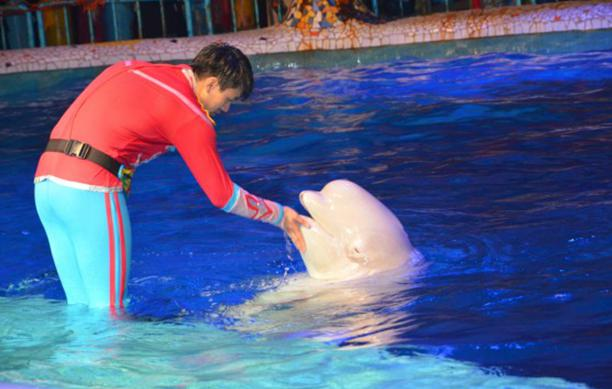
我跟BF每2个月就会去旅行一次，这次趁着双休BF就问我是想去青岛日照还是大连呢。。。我的回答是大连，因为青岛去过两次，日照去过一次，当然要挑自己没过的地儿啦~由于BF近期一直在加班，我俩一直在讨论到底是什么时候去大连，由于还不确定日期，因此去大连的火车票迟迟没..
端午大连游 与妹妹邂逅美丽的大海
2014.06.06
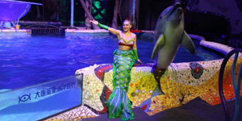
端午节去大连找妹妹玩，30号晚上的飞机，第一晚住机场附近，后两晚住星海广场，星海广场是大连的地标之一，看海之旅沿途有海、有风景，还有圣亚海洋世界非常值得推荐。在这里，我推荐大家酒店住星海广场附近，临近中山路，公交车很多、交通很方便，还有海景房可以住，穿过星海广..
【大连一日游】白色情人节携异地恋女友畅游连圣亚海洋世界
2014.05.26
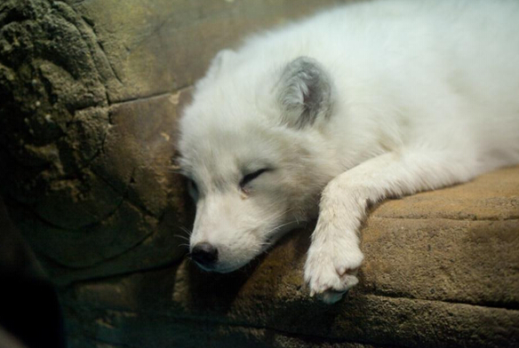
楼主大学四年级，坐等毕业季的节奏。三月份妹子说学校的事已经基本处理完毕了，于是过来大连看望苦逼熬毕业设计的楼主。这可把楼主高兴坏了。说起来这是她第二次来大连呢。上次时间比较匆忙也没带她出外面好好玩，决定这次补回来。找了很多游玩攻略，最终把第一站选在了大连圣亚..
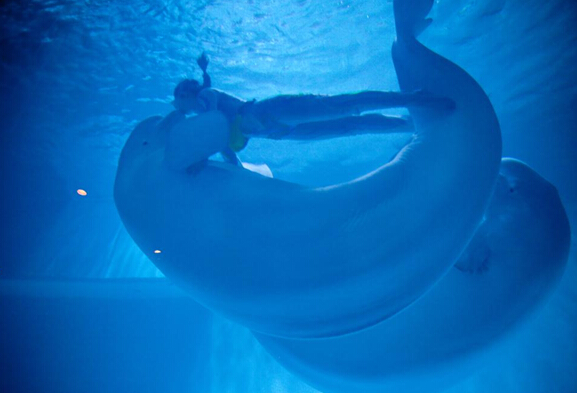
前段时间湖南卫视流行的《爸爸去哪儿》，跟着孩子妈妈追了几集。看着电视中爸爸们对孩子的爱，心里不经充满愧疚感。从他出生，到现在的6岁了。真正陪在他身边的日子少之又少。孩子一直是他妈妈和奶奶照顾着。五月份，公司的事务没那么紧了。加之天气也很好，孩子在学校受到了表..
【踏春季】圣亚的春天，一个不一样的海洋世界
2014.05.24
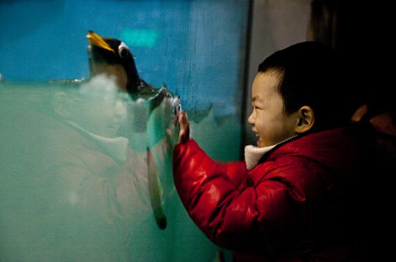
4月是一个春暖花开，生机勃勃让人振奋的季节，由于工作的调动我从南方来到了遥远的北方，对于一个从未出过远门的妹纸来说这毫无疑问是一种挑战！~~来到了大连，新的环境，新的工作，新的尝试让我不得不首先来熟悉这个陌生的城市… 大连是中国著名的旅游城市，之前就有..
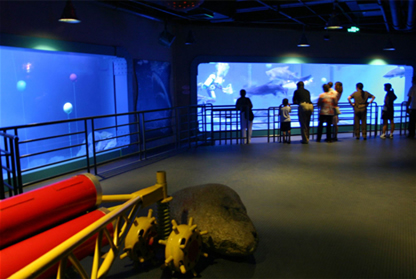
今天我来到大连的圣亚海洋世界，我早就听说这里很好玩，这里分为海洋馆、极地馆、珊瑚馆。到了海洋馆，我拿起照相机咔嚓咔嚓的就开始照相。哇！好美丽的海蛇呀！全身花里胡哨的。还有大鲨鱼，简直太可怕了，好多排锋利又巨大的牙齿和如此庞大的身躯，已经足以将一个大人吓着了！..
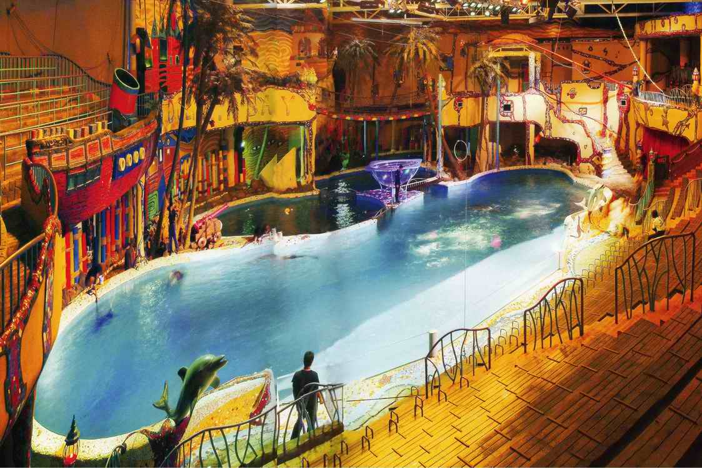
来到大连的第一站便直奔国内第一座海底通道式水族馆——圣亚海洋世界。进入馆内，立刻感觉与外界的阳光明媚大相径庭幽幽的灯光明暗有秩，一路伴随为游客拉开海洋之旅的神秘面纱。首先映入眼帘的是幽兰的“海底金字塔”，它用一种全封闭的金字塔造型将深深海..
圣亚海洋世界游记——海洋世界和动物们真漂亮！
2014.04.30
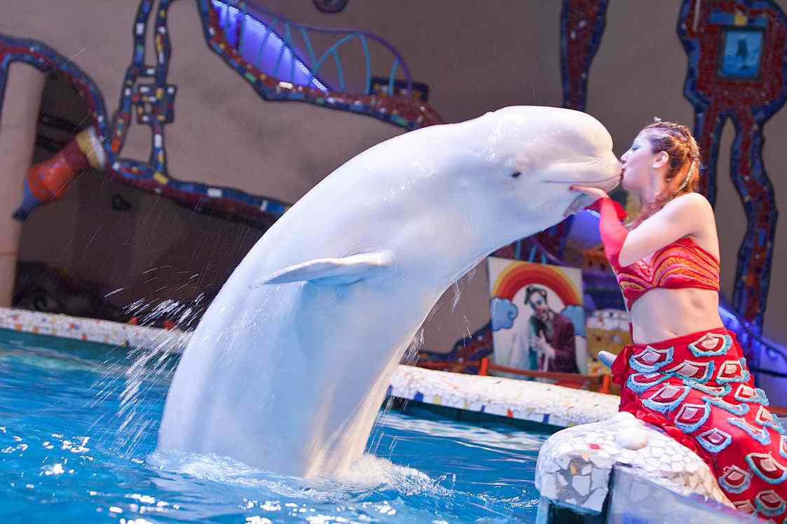
大连圣亚海洋世界第一次和朋友去圣亚海洋世界玩，看到里面的动物表演感觉特别新奇，特别是看到《海豚湾之恋》里的真人美人鱼和海豚的演绎，感觉特别浪漫，特别和谐，呵呵！还有《人鲸传奇》里的演员和白鲸拥抱的水中表演，堪称一绝啊，和白鲸接吻真是一种爱的享受。还去看了极地..
奇妙海底世界，大连圣亚海洋世界游记
2014.04.30
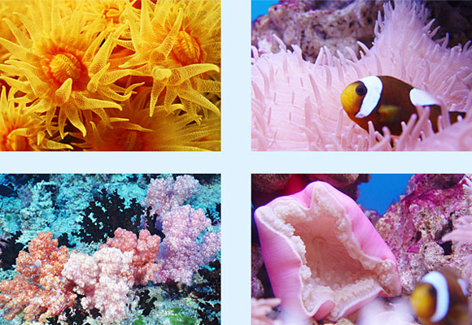
走进圣亚海洋世界的海洋馆，一进门就营造出一种身处外星的感觉，还有一个大大的宇宙飞碟，乍进去还会被吓一跳的，跟进了鬼屋似的。宇宙飞船表面开了几个小小的窗户，里面是悠游自在的各种鱼类和海洋生物，看着他们自由自在的游弋着，也会忘记了周围环境带给我们的恐惧感，继续往..
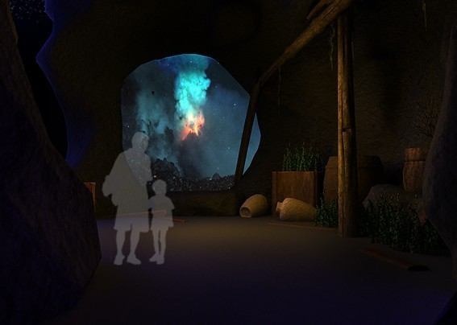
今年暑假，爸爸妈妈带我和外公一起去青岛、大连旅游，让我增长了许多见识。那壮观的栈桥、带有神话色彩的小青岛、巨型的大海轮、大连旅顺口神圣的军港、美丽的金石滩、充满神奇色彩的“圣亚海洋世界”、惊险刺激的野生动物园以及那海边金色的沙滩、蔚蓝的大海等等一切..
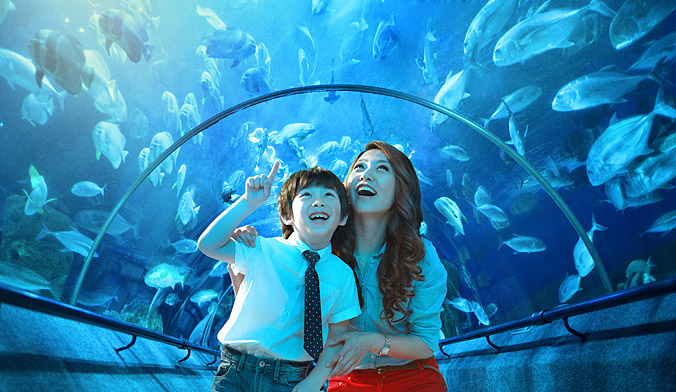
今年暑假，我和妈妈来到了向往已久的大连海洋馆。来在这里，首先映入眼帘的是一个硕大无比的海龟模型。这个模型非常逼真，它前爪在不停地摆动着，好像要拼命地游到大海里似的。旁边是一个鳄鱼池，几条鳄鱼身着绿色盔甲，一副昏昏欲睡的样子，时不时还打个哈欠，引来游客阵阵笑声..
让人流连忘返的大连圣亚海洋世界
2014.04.30
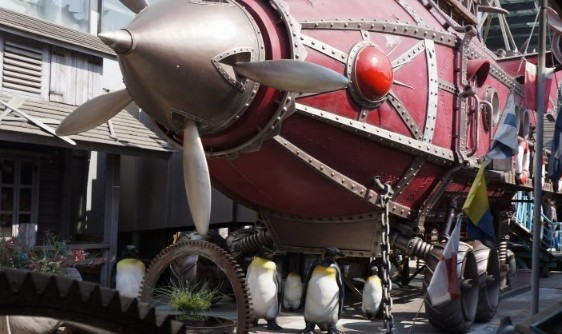
我们到达浪漫之都大连的第一站——大连圣亚海洋世界，他位于星海广场西侧、星海公园内，面朝大海，星海公园浴场及星海湾浴场信步可至。 我们住在壹品星海小区，从窗户就能看到星海广场的全貌和大海，我们到的时间是晚上，发现从窗户里看星海广场的夜景也十分美丽，别..
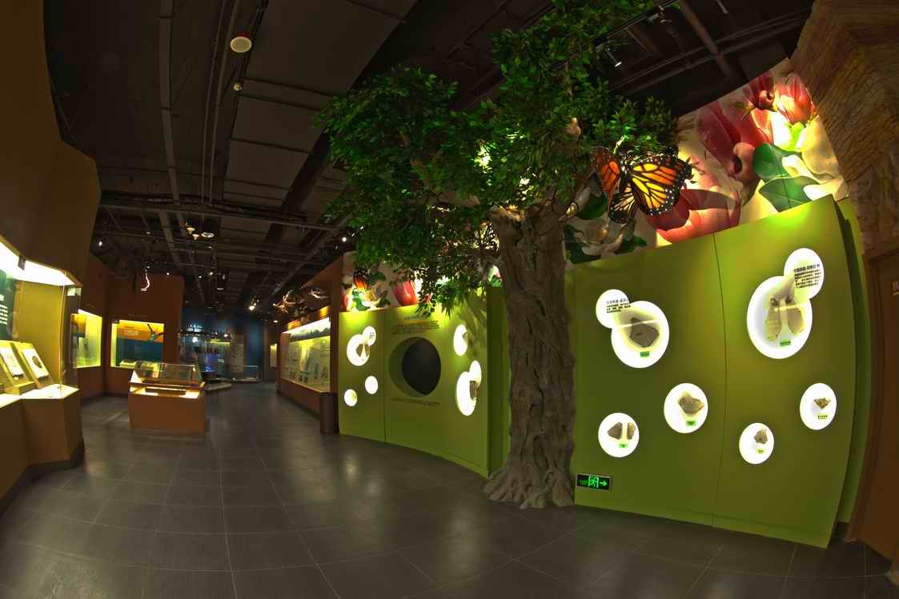
在我童年的记忆里，最难忘、最有趣的是游大连的圣亚极地海洋馆。人们都知道大连的老虎滩极地馆颇具盛名，现在又建成了一家圣亚极地馆，它更具特色。这次去那里，我见到了许许多多没有见过的东西，也发现了许多有趣的事情。 一进大门，映入眼帘的就是“企鹅圣地”。..